2wø.Open.Eyes Brand Studio & Portfolio
See Different.
Find new growth
& break out.
This is 2wø.Open.Eyes {twoː OH-pun eyez} Brand Studio, a boutique brand, innovation, & marketing strategy consultancy established to solve brand strategy, innovation, & consumer experience challenges for people and organizations seeking to move beyond the status quo.
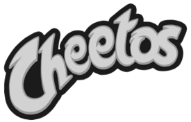
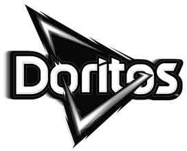
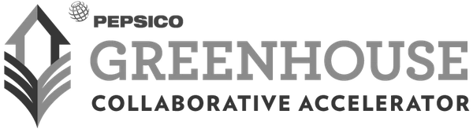
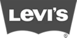
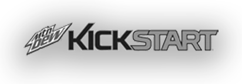
- EXPERIENCE ACROSS
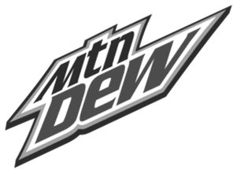
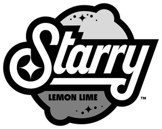
- EXPERIENCE ACROSS
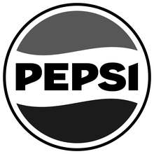
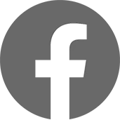
Selected work / 01—05
Five challenges.
New ways forward.
Strategy rooted in culture, built to unlock growth.
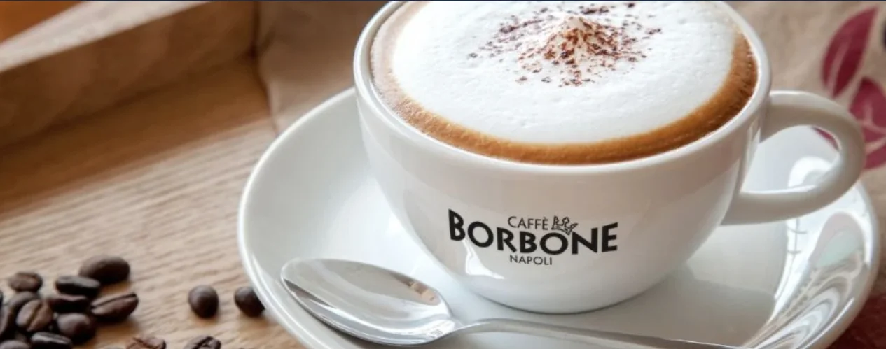
01 Marketing Strategist
Caffè Borbone
US Retail Market Strategy.
Helping the $400MM Italian Coffee Roaster enter & navigate the US retail landscape.
Caffè Borbone, a $400MM Italian Coffee Roaster with zero US retail footprint needed a market entry strategy for its debut in a notoriously crowded and buyer-guarded grocery channel. I built the sales & marketing strategy that de-risked the pitch before it reached grocery buyers.
In 60 days, it turned into 550+ new store placements.
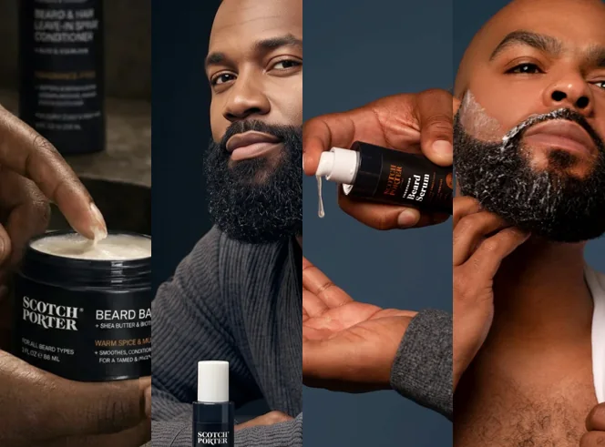
02 Brand & Innovation Strategist
Scotch Porter
Brand Positioning.
Codifying brand strategy fundamentals for US retail footprint expansion & company sale
A premium men’s grooming & haircare line with no documented brand foundations is a Ferrari without a steering wheel: stunning to the naked eye, but zero driver control over where it goes or how it navigates. This was Scotch Porter.
I crafted the brand positioning - the red thread that helped anchor the “Fresh From the Kitchen” campaign, drive retail expansion, secure marks as a top-growing men’s care brand & accrue $100MM+ revenue.

03 Cultural Strategist
Starry Lemon-Lime Soda
Gen Z Decoding.
Infusing Gen Z cultural & consumer insights into strategy for go/no-go development decisions
Before Starry was real it was a secret project: “Lemon-Lime.” Despite being skeptical we’d succeed, then PepsiCo Beverages CMO gave a simple charge: create a Sprite-fighter. I infused Gen Z cultural & insights into a strategy rich in category data & concept ideas but light on tribe understanding.
As a result, the CMO greenlit the project for full brand development & the rest is (~half a billion dollars first year sales) history.
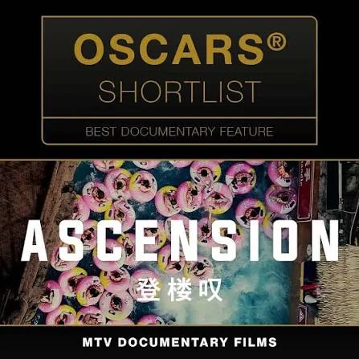
04 Brand & Cultural Strategist
MTV Entertainment
Series & Film Launches.
Leading strategy for 8 show debuts & Awards “For Your Consideration” campaigns to drive visibility & viewership
The Marketing Strategy SVP asked me to position 8 show & film debuts across MTV Entertainment’s sibling channels.
I led brand strategy for 8 show launches, culminating in 2 Oscar-shortlisted films & a night few will forget.

05 Brand Marketing Manager
Pepsi Cola
Product Reinvention.
Leading an expedited process to develop a next-generation mega-beverage worthy of the Pepsi namesake
After years of prodding by the PepsiCo Beverages Global President, CEO Indra Nooyi awakened to an epiphany; Project Verto (“the turn-around”) is born. The brief? Create a sub-30-calorie, all-natural, mega-beverage that can carry the heft of a Pepsi brand name & launch in time for the 2018 Superbowl.
I led a team of 42 cross-functionals & 10 agency to accelerate & complete product & brand development in 6 months.
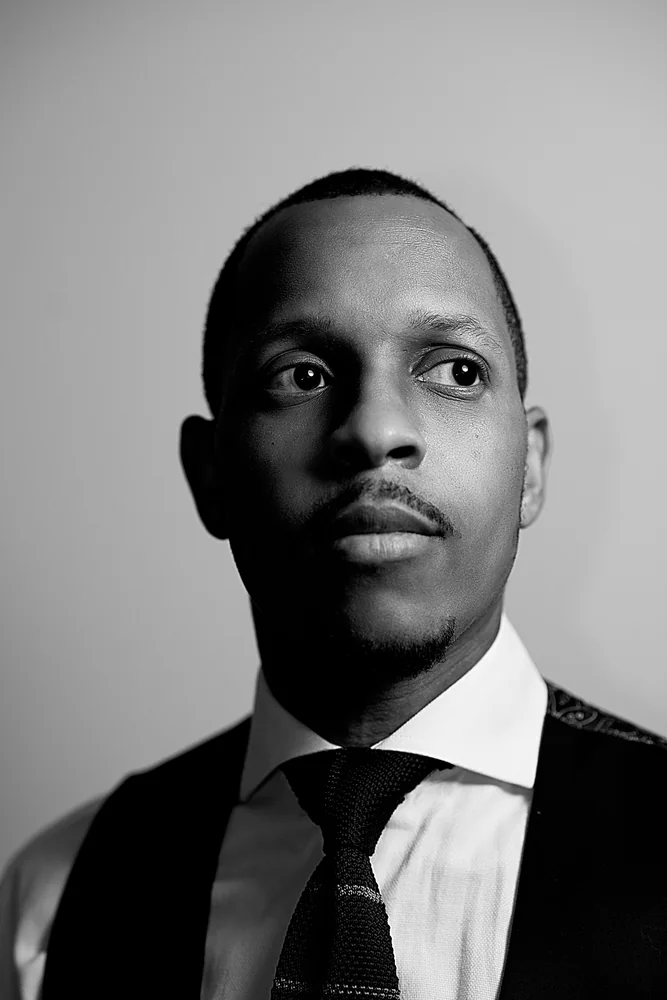
A different point of view / 2wø.Open.Eyes
Neurodivergence has perks for a creative & brand strategist.
I see the world ‘different’. Expansively. I help brands see different too.
Why? Never have I accepted what’s visible as the limit of what could be. I look for what others miss—and help brands find new ways forward.
Read more